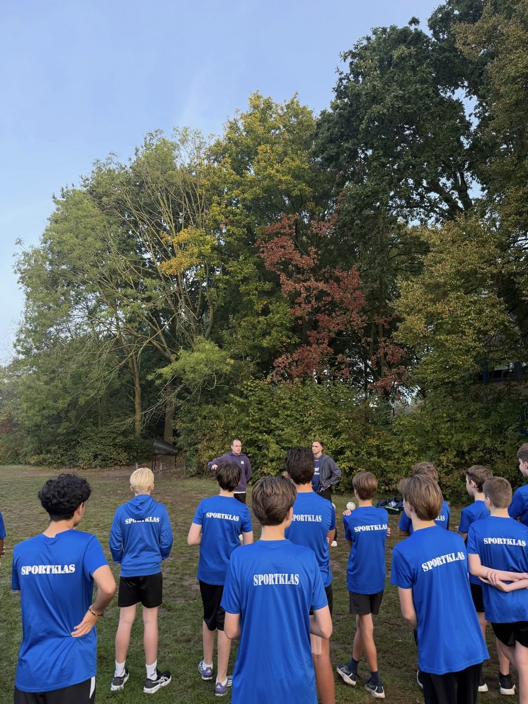
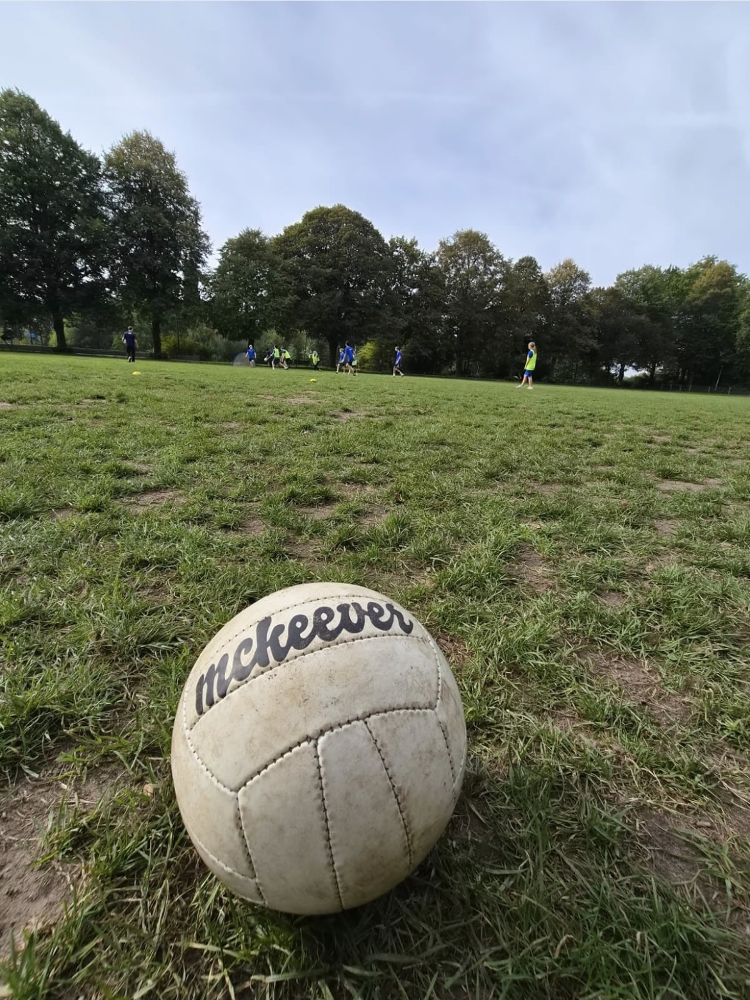
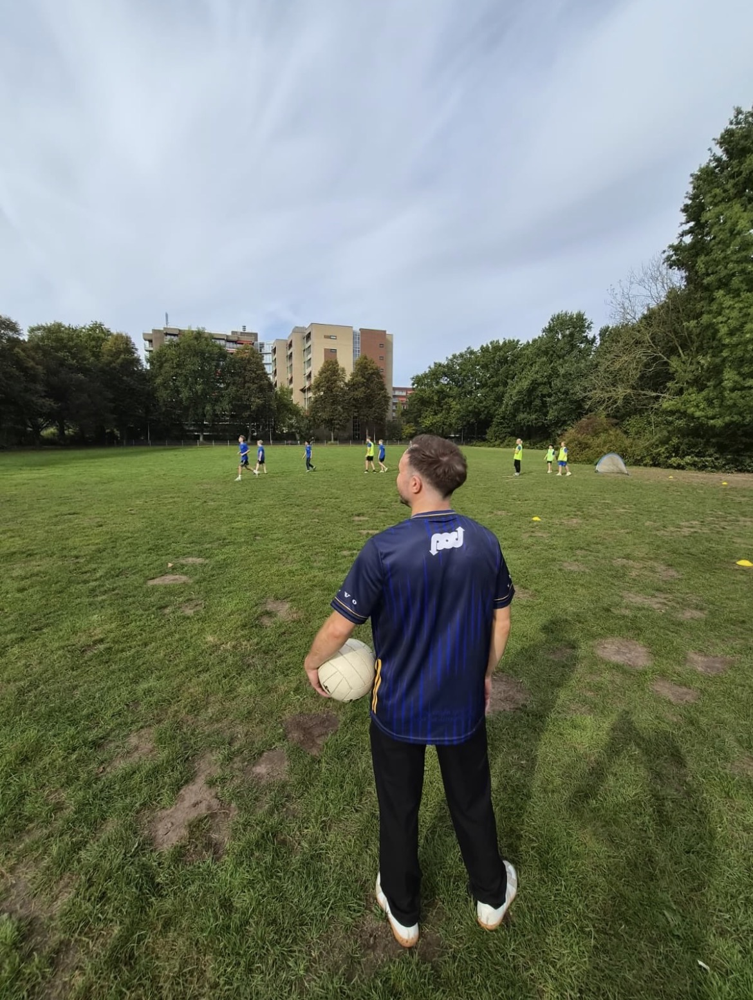
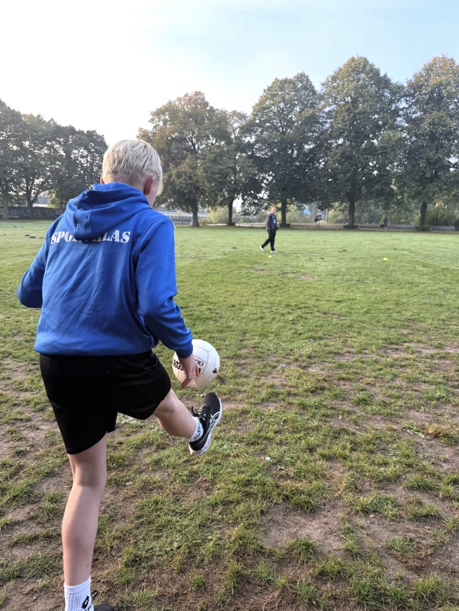
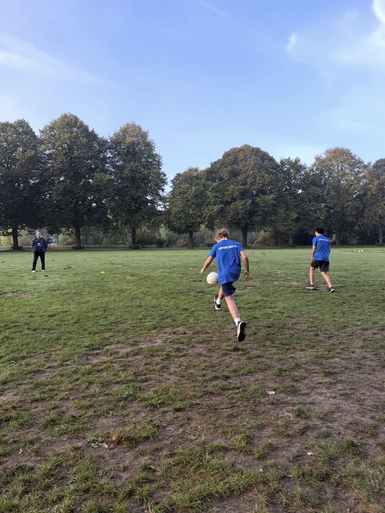

<title>Gaelic Football Clinic</title>
<meta name="claude:viewport-fit-sides" content="cover">
<meta name="description" content="Gaelic football clinic op jullie school of club in Nederland. Een Ierse trainer brengt de nationale sport van Ierland naar de gymles of sportdag. Vraag een offerte aan.">
<link rel="preconnect" href="https://fonts.googleapis.com">
<link rel="preconnect" href="https://fonts.gstatic.com" crossorigin>
<link href="https://fonts.googleapis.com/css2?family=Inter:wght@400;500;600;700;800;900&display=swap" rel="stylesheet">
<style>
  /* Layout: BTP-huisstijl. Donkere zones met foto, één witte zone voor de quote, goud als enige accent. */
  :root {
    --gold: #c9a227;
    --gold-bright: #ffd700;
    --black: #0a0a0a;
    --dark: #111111;
    --dark-panel: #181818;
    --white: #ffffff;
    --off-white: #f7f6f3;
    --text-dark: #1a1a1a;
    --text-mid: #444444;
    --text-light: #777777;
    --border-dark: #222222;
    --border-light: rgba(0,0,0,0.08);
    --green: #169b62;
    --font: "Inter", system-ui, -apple-system, "Segoe UI", sans-serif;
    color-scheme: dark;
  }
  * { box-sizing: border-box; }
  body {
    margin: 0; font-family: var(--font); background: var(--dark); color: var(--white);
    line-height: 1.6; -webkit-font-smoothing: antialiased; font-size: 16px;
  }
  body::before { content: ""; position: fixed; inset: 0 0 auto; height: env(safe-area-inset-top, 0px); z-index: 110; background: var(--black); }
  a { color: inherit; }
  img { max-width: 100%; display: block; }
  h1, h2, h3 { margin: 0; text-wrap: balance; }
  p { margin: 0; }
  .wrap {
    max-width: 1100px; margin: 0 auto;
    padding-left: max(16px, env(safe-area-inset-left, 0px));
    padding-right: max(16px, env(safe-area-inset-right, 0px));
  }

  /* Header */
  .header {
    position: sticky; top: env(safe-area-inset-top, 0px); z-index: 100;
    background: rgba(10,10,10,0.97); border-bottom: 1px solid var(--border-dark);
  }
  .header .wrap { display: flex; align-items: center; justify-content: space-between; gap: 1rem; padding-block: 1rem; }
  .logo { font-size: 1.2rem; font-weight: 900; letter-spacing: -0.02em; text-decoration: none; color: var(--white); }
  .logo:hover { color: var(--gold-bright); }
  .nav { display: flex; gap: 1.75rem; align-items: center; }
  .nav a { color: rgba(255,255,255,0.75); text-decoration: none; font-weight: 500; font-size: 0.9rem; }
  .nav a:hover { color: var(--white); }
  .nav a.active { color: var(--gold-bright); }
  @media (max-width: 760px) { .nav .hide-sm { display: none; } }

  /* Shared */
  .label {
    display: block; font-size: 0.65rem; font-weight: 800; text-transform: uppercase;
    letter-spacing: 0.22em; color: rgba(255,255,255,0.4); margin-bottom: 1rem;
  }
  .zone-white .label, .zone-off .label { color: rgba(0,0,0,0.4); }
  .divider { width: 40px; height: 3px; border-radius: 2px; background: var(--gold-bright); margin-top: 1rem; }
  .zone-white .divider, .zone-off .divider { background: var(--gold); }
  .h2 { font-size: clamp(2rem, 4vw, 3rem); font-weight: 900; letter-spacing: -0.04em; line-height: 1.05; }
  section { padding-block: 5rem; }
  .zone-white { background: var(--white); color: var(--text-dark); }
  .zone-off { background: var(--off-white); color: var(--text-dark); }

  .btn-gold, .btn-outline {
    display: inline-flex; align-items: center; gap: 0.5rem; padding: 0.95rem 2rem;
    border-radius: 8px; font-weight: 700; font-size: 0.95rem; text-decoration: none;
    transition: transform 0.2s, background 0.2s, border-color 0.2s, box-shadow 0.2s;
  }
  .btn-gold { background: var(--gold-bright); color: #000; }
  .btn-gold:hover { background: #ffed4e; transform: translateY(-2px); box-shadow: 0 8px 20px rgba(255,215,0,0.3); }
  .btn-outline { border: 2px solid rgba(255,255,255,0.2); color: var(--white); }
  .btn-outline:hover { border-color: rgba(255,255,255,0.6); }
  a:focus-visible { outline: 2px solid var(--gold-bright); outline-offset: 3px; }

  /* Hero */
  .hero {
    position: relative; padding-block: 8rem 4rem;
    background-color: var(--dark);
    background-image: linear-gradient(90deg, rgba(10,10,10,0.85) 0%, rgba(10,10,10,0.55) 60%, rgba(10,10,10,0.35) 100%), linear-gradient(180deg, transparent 60%, var(--dark) 100%), url('gaelic-football-clinic-uitleg-sportklas-atrium.jpg');
    background-size: cover; background-position: center 78%;
  }
  .live {
    display: inline-flex; align-items: center; gap: 0.5rem; font-size: 0.75rem; font-weight: 700;
    padding: 0.35rem 0.8rem; border-radius: 999px; background: rgba(22,155,98,0.18);
    color: #6ee7b0; border: 1px solid rgba(22,155,98,0.45); margin-bottom: 1.5rem;
  }
  .live::before { content: ""; width: 7px; height: 7px; border-radius: 50%; background: var(--green); }
  .hero h1 {
    font-size: clamp(2.3rem, 5.4vw, 4.2rem); font-weight: 900; letter-spacing: -0.045em; line-height: 1.02;
    max-width: 14ch; text-shadow: 0 2px 24px rgba(0,0,0,0.45);
  }
  .hero h1 em { font-style: normal; color: var(--gold-bright); }
  .hero .lead {
    margin-top: 2rem; max-width: 560px; font-size: 1.08rem; line-height: 1.85;
    color: rgba(255,255,255,0.86); text-shadow: 0 1px 12px rgba(0,0,0,0.5);
  }
  .actions { display: flex; flex-wrap: wrap; gap: 1rem; margin-top: 2rem; }

  .strip {
    margin-top: 3.5rem; display: grid; grid-template-columns: repeat(4, minmax(0, 1fr));
    gap: 1px; background: var(--border-dark); border: 1px solid var(--border-dark);
    border-radius: 12px; overflow: hidden;
  }
  .strip div { background: rgba(24,24,24,0.92); padding: 1.4rem 1.5rem; min-width: 0; }
  .strip h4 {
    margin: 0 0 0.35rem; font-size: 0.65rem; font-weight: 800; text-transform: uppercase;
    letter-spacing: 0.12em; color: rgba(255,255,255,0.4);
  }
  .strip p { font-weight: 700; font-size: 0.98rem; line-height: 1.4; }
  @media (max-width: 860px) { .strip { grid-template-columns: repeat(2, minmax(0, 1fr)); } }
  @media (max-width: 460px) { .strip { grid-template-columns: 1fr; } }

  /* Quote */
  .quote-grid { display: grid; grid-template-columns: 0.9fr 1.1fr; gap: 3.5rem; align-items: center; }
  .quote-photo { border-radius: 14px; overflow: hidden; aspect-ratio: 4 / 5; max-width: 100%; background: var(--off-white); }
  .quote-photo img { width: 100%; height: 100%; object-fit: cover; }
  .quote-mark { font-size: 6rem; line-height: 0.6; font-weight: 900; color: var(--gold); height: 2.5rem; }
  blockquote {
    margin: 0; font-size: clamp(1.4rem, 2.6vw, 2rem); font-weight: 800; letter-spacing: -0.025em;
    line-height: 1.3; color: var(--text-dark); text-wrap: pretty;
  }
  blockquote mark { background: linear-gradient(transparent 62%, rgba(255,215,0,0.55) 62%); color: inherit; }
  .who { display: flex; align-items: center; gap: 0.9rem; margin-top: 2rem; }
  .avatar {
    width: 44px; height: 44px; border-radius: 50%; background: var(--text-dark); color: var(--gold-bright);
    display: grid; place-items: center; font-weight: 800;
  }
  .who strong { display: block; font-size: 0.95rem; }
  .who span { font-size: 0.85rem; color: var(--text-light); }
  @media (max-width: 820px) { .quote-grid { grid-template-columns: 1fr; gap: 2rem; } .quote-photo { aspect-ratio: 16 / 10; } }

  /* Programme */
  .intro { max-width: 620px; margin-top: 1.5rem; color: rgba(255,255,255,0.72); line-height: 1.8; }
  .steps { list-style: none; padding: 0; margin: 3rem 0 0; display: grid; grid-template-columns: repeat(3, minmax(0, 1fr)); gap: 1.25rem; counter-reset: step; }
  .steps li {
    counter-increment: step; background: var(--dark-panel); border: 1px solid var(--border-dark);
    border-radius: 14px; padding: 1.75rem; min-width: 0;
  }
  .steps li::before {
    content: "Stap " counter(step); display: block; font-size: 0.7rem; font-weight: 800; letter-spacing: 0.14em;
    text-transform: uppercase; color: var(--gold-bright); margin-bottom: 0.9rem;
  }
  .steps h3 { font-size: 1.2rem; font-weight: 800; letter-spacing: -0.02em; margin-bottom: 0.6rem; }
  .steps p { color: rgba(255,255,255,0.68); font-size: 0.95rem; line-height: 1.7; }
  .terms { display: flex; flex-wrap: wrap; gap: 0.5rem; margin-top: 1rem; }
  .terms span {
    font-size: 0.75rem; font-weight: 600; padding: 0.3rem 0.65rem; border-radius: 6px;
    background: rgba(255,255,255,0.06); border: 1px solid rgba(255,255,255,0.1); color: rgba(255,255,255,0.85);
  }
  .terms span i { font-style: normal; color: rgba(255,255,255,0.45); }
  @media (max-width: 860px) { .steps { grid-template-columns: 1fr; } }

  /* Photos: 4 kolommen, liggende foto en Instagram-kaart over 2 kolommen */
  .photos { display: grid; grid-template-columns: repeat(4, minmax(0, 1fr)); grid-auto-rows: clamp(200px, 26vw, 320px); gap: 0.75rem; margin-top: 3rem; }
  .photos figure { margin: 0; border-radius: 12px; overflow: hidden; background: var(--dark-panel); min-width: 0; }
  .photos img { width: 100%; height: 100%; object-fit: cover; }
  .photos .wide { grid-column: span 2; }
  .photos .ig {
    display: flex; flex-direction: column; justify-content: flex-end; padding: 1.4rem; text-decoration: none;
    background: var(--dark-panel); border: 1px solid var(--border-dark); border-radius: 12px;
  }
  .photos .ig strong { font-size: 1.05rem; }
  .photos .ig span { color: rgba(255,255,255,0.55); font-size: 0.85rem; }
  .photos .ig:hover strong { color: var(--gold-bright); }
  @media (max-width: 760px) { .photos { grid-template-columns: repeat(2, minmax(0, 1fr)); grid-auto-rows: clamp(180px, 52vw, 280px); } }

  /* Audience */
  .cards { display: grid; grid-template-columns: repeat(3, minmax(0, 1fr)); gap: 1.25rem; margin-top: 2.5rem; }
  .card {
    background: var(--white); border: 1px solid var(--border-light); border-top: 3px solid var(--gold);
    border-radius: 14px; padding: 1.75rem; min-width: 0;
  }
  .card .tag { font-size: 0.65rem; font-weight: 800; text-transform: uppercase; letter-spacing: 0.12em; color: var(--gold); }
  .card h3 { font-size: 1.15rem; font-weight: 800; margin: 0.5rem 0 0.6rem; color: var(--text-dark); }
  .card p { font-size: 0.93rem; color: var(--text-mid); line-height: 1.7; }
  @media (max-width: 860px) { .cards { grid-template-columns: 1fr; } }

  /* Ireland bridge */
  .bridge {
    display: grid; grid-template-columns: 1fr auto; gap: 2rem; align-items: center;
    padding: 2.5rem; border-radius: 16px; border: 1px solid var(--border-dark);
    background: linear-gradient(120deg, rgba(22,155,98,0.16), rgba(24,24,24,1) 55%);
  }
  .bridge h3 { font-size: clamp(1.4rem, 2.6vw, 1.9rem); font-weight: 900; letter-spacing: -0.03em; }
  .bridge p { margin-top: 0.75rem; color: rgba(255,255,255,0.72); max-width: 560px; }
  @media (max-width: 760px) { .bridge { grid-template-columns: 1fr; padding: 1.75rem; } }

  /* FAQ */
  .faq { margin-top: 2.5rem; border-top: 1px solid var(--border-light); }
  details { border-bottom: 1px solid var(--border-light); }
  summary {
    list-style: none; cursor: pointer; padding: 1.3rem 0; font-weight: 700; font-size: 1.02rem;
    display: flex; justify-content: space-between; gap: 1rem; color: var(--text-dark);
  }
  summary::-webkit-details-marker { display: none; }
  summary::after { content: "+"; font-weight: 800; color: var(--gold); font-size: 1.3rem; line-height: 1; }
  details[open] summary::after { content: "–"; }
  summary:focus-visible { outline: 2px solid var(--gold); outline-offset: 2px; }
  details p { padding-bottom: 1.4rem; color: var(--text-mid); max-width: 680px; line-height: 1.75; }

  /* CTA + footer */
  .cta { text-align: left; }
  .cta .h2 { max-width: 16ch; }
  .cta p { margin-top: 1.25rem; color: rgba(255,255,255,0.72); max-width: 520px; }
  .mail { margin-top: 1.25rem; font-size: 0.9rem; color: rgba(255,255,255,0.55); }
  .mail b { color: var(--white); user-select: all; }
  footer { border-top: 1px solid var(--border-dark); background: var(--black); }
  footer .wrap { padding-block: 2.5rem; display: flex; flex-wrap: wrap; justify-content: space-between; gap: 1rem; font-size: 0.82rem; color: rgba(255,255,255,0.45); }

  @media (prefers-reduced-motion: reduce) { * { transition: none !important; } }

  .flow { display: flex; flex-wrap: wrap; align-items: center; gap: 0.6rem; margin-top: 1.75rem; font-weight: 700; font-size: 0.95rem; }
  .flow span { padding: 0.45rem 0.9rem; border-radius: 999px; background: rgba(255,255,255,0.08); border: 1px solid rgba(255,255,255,0.14); }
  .flow i { font-style: normal; color: var(--gold-bright); }
  .photos3 { display: grid; grid-template-columns: repeat(3, minmax(0, 1fr)); gap: 0.75rem; }
  .photos3 figure { margin: 0; border-radius: 12px; overflow: hidden; aspect-ratio: 4 / 3; max-width: 100%; background: var(--dark-panel); }
  .photos3 img { width: 100%; height: 100%; object-fit: cover; }
  @media (max-width: 640px) { .photos3 { grid-template-columns: 1fr 1fr; } .photos3 figure:first-child { grid-column: 1 / -1; } }
  .quote-simple { max-width: 760px; }
  .tight { padding-block: 3.5rem; }
</style>

<header class="header">
  <div class="wrap">
    <a class="logo" href="https://travelbeyondthepitch.com/">Beyond the Pitch</a>
    <nav class="nav" aria-label="Hoofdmenu">
      <a class="hide-sm" href="https://travelbeyondthepitch.com/experiences/">Experiences</a>
      <a class="active" href="#top">Clinics</a>
      <a class="hide-sm" href="https://travelbeyondthepitch.com/about/">Over ons</a>
      <a href="https://travelbeyondthepitch.com/contact/">Contact</a>
    </nav>
  </div>
</header>

<main id="top">
  <section class="hero">
    <div class="wrap">
      <span class="live">Nu live · Nederland · Op jullie locatie</span>
      <h1>Gaelic Football <em>Clinic</em></h1>
      <div class="divider"></div>
      <p class="lead">Een van de grootste sporten van Ierland. Gegeven door Ierse trainers die jarenlang op niveau speelden.</p>
      <div class="actions">
        <a class="btn-gold" href="https://travelbeyondthepitch.com/contact/">Vraag een offerte aan
          <svg width="16" height="16" viewBox="0 0 24 24" fill="none" stroke="currentColor" stroke-width="3" stroke-linecap="round" stroke-linejoin="round" aria-hidden="true"><path d="M5 12h14M12 5l7 7-7 7"/></svg>
        </a>
        <a class="btn-outline" href="#programma">Hoe werkt het?</a>
      </div>
      <div class="strip">
        <div><h4>Duur</h4><p>Ongeveer 60 minuten per klas</p></div>
        <div><h4>Groep</h4><p>25-30 leerlingen per sessie</p></div>
        <div><h4>Waar</h4><p>Op jullie sportveld of in de sportzaal</p></div>
        <div><h4>Tarief</h4><p>Op aanvraag, afhankelijk van groepsgrootte en aantal sessies</p></div>
      </div>
    </div>
  </section>

  <section class="zone-white">
    <div class="wrap quote-grid">
      <div class="quote-photo"></div>
      <div>
        <span class="label">Wat scholen zeggen</span>
        <div class="quote-mark" aria-hidden="true">“</div>
        <blockquote>Ondergedompeld in de wereld van Gaelic football en dat op professionele en leuke manier <mark>door een echte Ier!</mark> Een leuke en leerzame ervaring voor onze leerlingen en zeker voor herhaling vatbaar!</blockquote>
        <div class="who">
          <div class="avatar" aria-hidden="true">R</div>
          <div><strong>Robin</strong><span>'t Atrium · middelbare school</span></div>
        </div>
      </div>
    </div>
  </section>

  <section id="programma">
    <div class="wrap">
      <span class="label">Zo werkt het</span>
      <h2 class="h2">Eén clinic,<br>drie onderdelen</h2>
      <div class="divider"></div>
      <ol class="steps">
        <li><h3>Introductie</h3><p>Onze Ierse trainer vertelt over Gaelic Football en de betekenis ervan in de Ierse cultuur.</p></li>
        <li><h3>Basisvaardigheden</h3><p>Leerlingen gaan actief aan de slag met de basis en leuke spelvormen.</p></li>
        <li><h3>Partijtjes</h3><p>Desgewenst sluiten we af met wedstrijdelementen en onderlinge partijtjes.</p></li>
      </ol>
      <div class="photos">
        <figure class="wide"></figure>
        <figure></figure>
        <figure></figure>
        <figure></figure>
        <figure></figure>
        <a class="ig wide" href="https://www.instagram.com/travelbeyondthepitch/" target="_blank" rel="noopener">
          <strong>Meer foto's →</strong>
          <span>@travelbeyondthepitch</span>
        </a>
      </div>
    </div>
  </section>

  <section class="zone-white">
    <div class="wrap">
      <span class="label">FAQ</span>
      <h2 class="h2">Veelgestelde vragen</h2>
      <div class="divider"></div>
      <div class="faq">
        <details>
          <summary>Voor welke leeftijd is de clinic?</summary>
          <p>Voor alle leerjaren, ook de brugklas. We passen de oefeningen en spelvormen aan op de leeftijd en het niveau van de leerlingen.</p>
        </details>
        <details>
          <summary>Moeten leerlingen ervaring hebben?</summary>
          <p>Nee. Iedereen begint bij nul.</p>
        </details>
        <details>
          <summary>Wat moeten wij regelen?</summary>
          <p>Alleen een geschikt sportveld of een sportzaal. Wij zorgen voor alle materialen en de begeleiding.</p>
        </details>
        <details>
          <summary>Kunnen meerdere klassen meedoen?</summary>
          <p>Ja, graag zelfs. We plannen het liefst meerdere klassen op één dag, zodat het een volledige clinicdag wordt.</p>
        </details>
        <details>
          <summary>Wanneer kan de clinic plaatsvinden?</summary>
          <p>Het hele schooljaar door. De data stemmen we af op jullie wensen en de beschikbaarheid van onze trainers.</p>
        </details>
        <details>
          <summary>Hebben jullie gegevens van leerlingen nodig?</summary>
          <p>Nee. We regelen alles via de docent.</p>
        </details>
      </div>
    </div>
  </section>

  <section class="cta">
    <div class="wrap">
      <span class="label">Klaar?</span>
      <h2 class="h2">Haal Ierland naar jullie school.</h2>
      <div class="divider"></div>
      <div class="actions">
        <a class="btn-gold" href="https://travelbeyondthepitch.com/contact/">Vraag een offerte aan
          <svg width="16" height="16" viewBox="0 0 24 24" fill="none" stroke="currentColor" stroke-width="3" stroke-linecap="round" stroke-linejoin="round" aria-hidden="true"><path d="M5 12h14M12 5l7 7-7 7"/></svg>
        </a>
      </div>
      <p class="mail">Of mail direct: <b>info@travelbeyondthepitch.com</b></p>
    </div>
  </section>
</main>

<footer>
  <div class="wrap">
    <span>Beyond the Pitch VOF · 's-Hertogenbosch</span>
    <span>© 2026 Beyond the Pitch</span>
  </div>
</footer>
